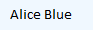

Gaurav's Design Document
Purpose
The purpose of this website is to create an Online Web-Page-Resume on Github which will have several pages which will contain my Profile data, links to my LinkedIn, Facebook, twitter account as well as snapshots of my relevant certificates etc. In today’s competitive world, job aspirants like to display their skills/experiences and expectations to the potential employer’s in the most effective way possible. The employer seems to look for an extra edge that an aspirant can provide to stand apart from the crowd. Traditional recruiting techniques include a Resume and a LinkedIn profile. However, if an aspirant can provide an online profile of his entire data through an individual webpage it can be a good way to present himself since Resume has a limitation of space and LinkedIn has predetermined format of representing data. I chose this idea because I am Graduating soon and this project can be of great importance to me to present myself to employers as well.
Audience
The visitors for this website will be mostly Human Resource department employees of a company, Entrepreneurs, Online Job Recruiters, Staffing Agencies, Academic Professors who are looking for some insights about my Co-Circular profile.
Design Concept
I asked a few staff members/student members working with Mizzou Career center so that it would be helpful to design my Online WebPage-Resume based on opinions given by them.
Questions asked to the group of people
-
- How long does it take for the recruiter to get a first impression whether good or bad when they see an online Web-Page resume?
-
- 120 seconds
- 90 seconds
- 60 seconds
- Will you choose to choose to go through an online Web-Page resume despite having a bad first impression?
-
- For me first impression is last impression. If you don’t have the skill to impress a recruiter like me at the first glance, then I won’t prefer going through your resume there-on.
- I will definitely go through your resume despite un-appealing first look. But I would then expect something better in the succeeding part while I go through your resume to continue viewing your profile.
- Off-course a first good impression would be a positive aspect to begin with, but I won’t be judge-mental before I go through your entire Online-Resume.
- List important things that you think must be included in an online Web-Page Resume?
-
- Circular Activities in Details.
- Chronological arrangement of all the data.
- Links to appropriate site’s eg: twitter account.
- Relevant Contact Information.
- Avoid presenting irrelevant information.
Reference Websites
The five websites listed below shows a good or bad artifacts which would be helpful for the final design:-
- Navigation: jenniferlundstrem is a good quality online Teaching Web-Page profile of Jennifer Lundstrem due to its easy navigation from one section to another.
- Simple Layout: jenniferlundstrem is a good quality online Teaching Web-Page profile of Jennifer Lundstrem has a simple layout starting with homepage.
- Layout to be avoided: shangy is an academic profile of Professor Yi Shang with uneven distribution of information and non-contrasting color scheme and can be worked upon.
- Representing the content: Dr. Krista Galyen is online profile of Dr. Krista Galyen of Mizzou which provides highlights of representing content effectively.
- Color scheme used: Since the online Web-Page Resume is an informative site and the viewers will be reading it, I will prefer using dark colors for Writing and light colors for Background.
Presentation Information
Contents
Based on the information received in the interview and also referencing other websites the following would be the main content my website.
-
- Home: A link to reach the homepage which will be available every-time in the website.
- Contact Info: I will provide a contact info o homepage as well as provide a link to my e-mail address on every page.
- Links to my social content: This links will direct the user to my social networking profile like my LinkedIn profile, Twitter Account, Facebook Account.
- Download Pdf file options: I will provide options to download my One-page Resume as well as Covering letter in Pdf format to the viewer.
Text Outline for website organization
You can download text outline pdf from here .pdf
Text Outline for website organization
You can download website organization pdf from here .pdf
Rationale for organization
The aim of making my web-page is to present myself in a simple yet elegant manner. The web-page will be easy to navigate, informative and will have a links to all relevant information which is discussed but not stated
Media
The banner I am going to use is nothing but my own name and will be created by me using a legitimate Text style that would be appealing as well as readable.
Color scheme and rationale
Since the online Web-Page Resume is an informative site and the viewers will be reading it, I will prefer using dark colors for Writing and light colors for Background.
-
